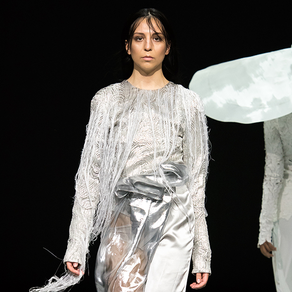
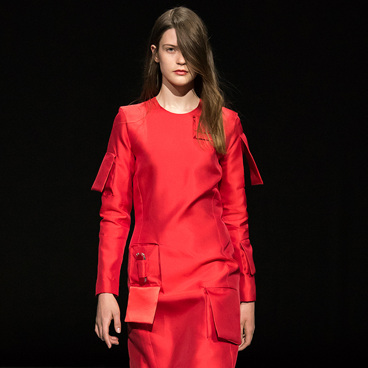
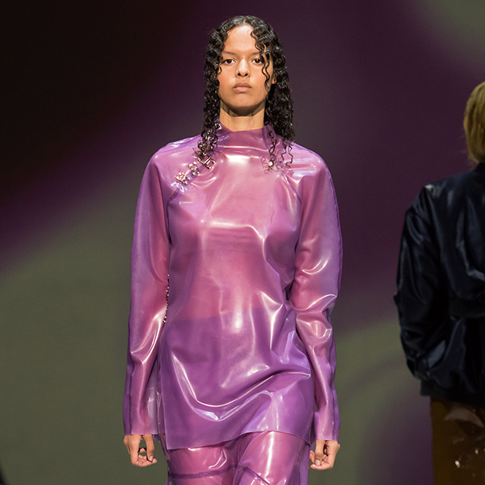
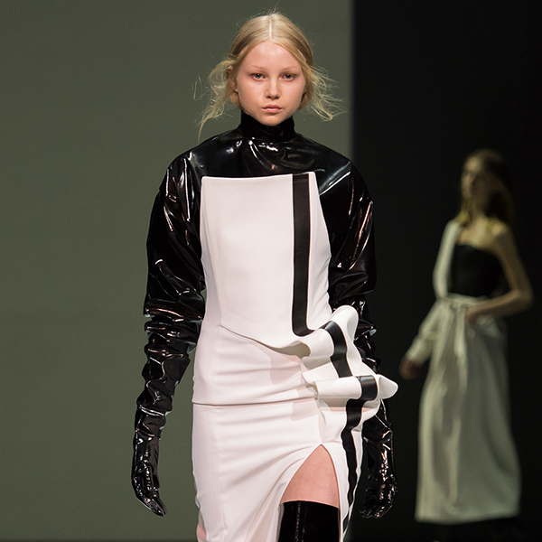
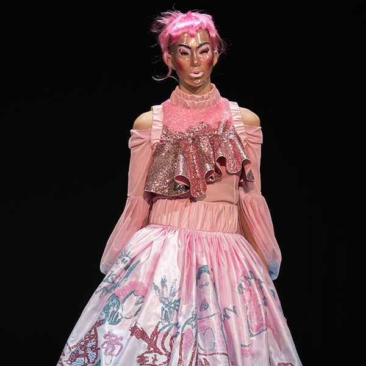
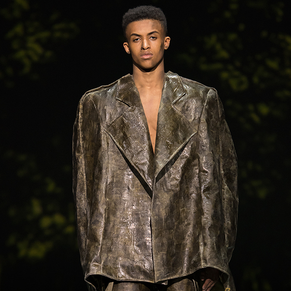
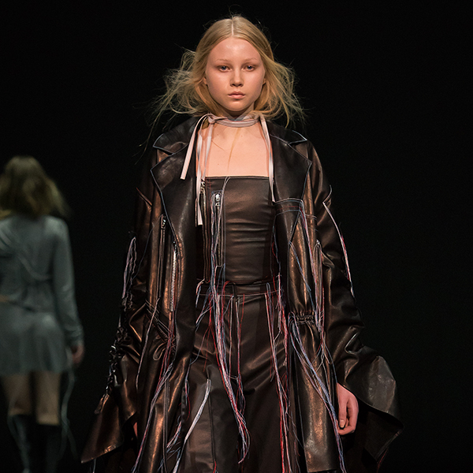
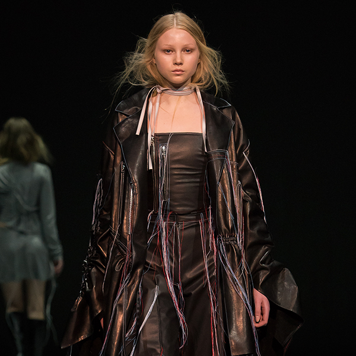
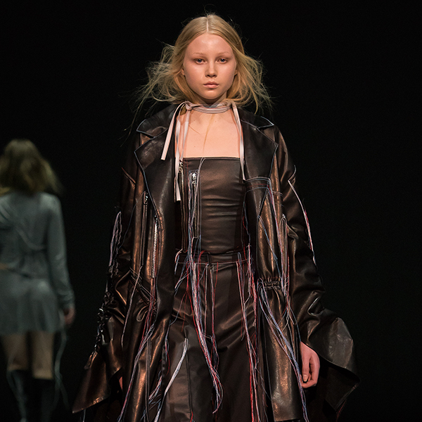

Visuals for Beckmans Graduation Show 2016.
Our aim was to create graphic interpretations based on each student's collection.
Made in collaboration with Gustav Stockman, Lisa Borg and Tor Westerlund.
All visuals:







 

